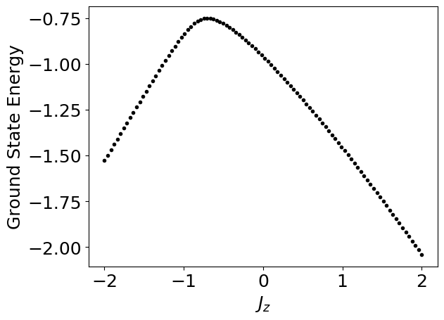

Please construct the matrix representation of the following Hamiltonian describing a one dimensional system involving 4 spins (L=4) with neighboring Heisenberg interaction
\hat{H} = -\sum_{i=0}^{L-1} \left(J_x\hat{S}^x_{i}\hat{S}^x_{i+1}+ J_y\hat{S}^y_{i}\hat{S}^{y}_{i+1} + J_z\hat{S}^z_{i}\hat{S}^z_{i+1}\right),
where \hat{S}^{x,y,z}_{i} is the spin-1/2 operator at spin i. Then, use np.linalg.eigvalsh() to find out the eigenenergies. Please fix J_x=0.7, J_y=1, and change J_z from -2 to 2 to plot the ground state energy (the lowest) as a function J_z.
Code
def paulimatrices(): sigx = np.array([0.,1,1,0]).reshape(2,2) sigy = np.array([0.,-1j,1j,0]).reshape(2,2) sigz = np.array([1.,0,0,-1]).reshape(2,2)return sigx, sigy, sigzdef kron(U,V): n = U.shape[0] p = V.shape[0] W = np.zeros((n*p,n*p), dtype=np.complex64)for i inrange(n):for k inrange(n):for j inrange(p):for l inrange(p): W[p*i+j,p*k+l] = U[i,k]*V[j,l]return Wdef Hamiltonian(Jx,Jy,Jz): paulis = paulimatrices() iden = np.identity(2) Js = [Jx, Jy, Jz] S1s = [kron(pa,kron(iden,kron(iden,iden)))/2for pa in paulis] S2s = [kron(iden,kron(pa,kron(iden,iden)))/2for pa in paulis] S3s = [kron(iden,kron(iden,kron(pa,iden)))/2for pa in paulis] S4s = [kron(iden,kron(iden,kron(iden,pa)))/2for pa in paulis] S1dot2 =sum([Js[i]*S1s[i]@S2s[i] for i inrange(3)]) S2dot3 =sum([Js[i]*S2s[i]@S3s[i] for i inrange(3)]) S3dot4 =sum([Js[i]*S3s[i]@S4s[i] for i inrange(3)]) H =(S1dot2 + S2dot3 + S3dot4) H = H.realreturn Hif__name__=='__main__': nJ =100 Jzlist= np.linspace(-2,2,nJ) Jx =0.7 Jy =1 grdE = np.zeros(nJ)for jj inrange(nJ): H = Hamiltonian(Jx,Jy,Jzlist[jj]) eigenvalues = np.linalg.eigvalsh(H) grdE[jj] = np.min(eigenvalues) plt.plot(Jzlist,grdE,'k.') plt.xlabel(r'$J_z$') plt.ylabel('Ground State Energy')

Problem 2 (25pts)
We will now use QR decomposition to solve a linear system of equations, \boldsymbol{A}\boldsymbol{x} = \boldsymbol{b}. This equation can be rewritten as: \boldsymbol{Q}\boldsymbol{R}\boldsymbol{x} = \boldsymbol{b}. We can take advantage of the orthogonality of \boldsymbol{Q} to re-express this as: \boldsymbol{R}\boldsymbol{x} = \boldsymbol{Q}^T \boldsymbol{b}. But now the right-hand side contains only known quantities and the left-hand side has the upper-triangular matrix \boldsymbol{R}, so a back substitution is all that’s needed. Implement this approach in Python based on QR decomposition and back substitution you have learned.
Code
import numpy as npdef mag(xs):return np.sqrt(np.sum(xs*xs))def backsub(U,bs): n = bs.size xs = np.zeros(n)for i inreversed(range(n)): xs[i] = (bs[i] - U[i,i+1:]@xs[i+1:])/U[i,i]return xsdef testcreate(n,val): A = np.random.uniform(-1,1,n**2).reshape(n,n) bs = np.random.uniform(-1,1,n) return A, bsdef testsolve(f,A,bs): xs = f(A,bs);print(xs) xs = np.linalg.solve(A,bs);print(xs)def qrdec(A): n = A.shape[0] Ap = np.copy(A) Q = np.zeros((n,n)) R = np.zeros((n,n))for j inrange(n):for i inrange(j): R[i,j] = np.sum(Q[:,i]*A[:,j]) Ap[:,j] -= R[i,j]*Q[:,i] R[j,j] = mag(Ap[:,j]) Q[:,j] = Ap[:,j]/R[j,j]return Q, Rdef qrsolve(A,bs): Q, R = qrdec(A) ys = np.dot(np.transpose(Q),bs) xs = backsub(R,ys)return xsif__name__=='__main__': A, bs = testcreate(4,21) Q, R = qrdec(A) testsolve(qrsolve,A,bs)print(" ")
Calculate the following three dimensional integration numerically using Monte Carlo method, with Metropolis algorithm:
I = \frac{\int_{x^2+y^2+z^2\leq 1} dxdydz\, e^{-(x^2+y^2+ z^2)}(x^2+y^2)}{\int_{x^2+y^2 + z^2\leq 1} dxdydz\, e^{-(x^2 + y^2 + z^2)}}.
Please also print out the overall acceptance probability.
Code
import numpy as npdef w(x): x_sq = np.sum(x**2)if (x_sq >1):return0.else:return np.exp(-x_sq)def f(x):return x[0]**2+ x[1]**2def initialize():return np.random.uniform(-0.5,0.5,3)def propose_new(x,theta):return x + theta * np.random.uniform(-1,1,3)def monte_carlo(w, f, theta,n_sample, discard_m): x = initialize() wx = w(x) fs = [] accept_num =0for jj inrange(discard_m+n_sample): y = propose_new(x,theta) wy = w(y)if (wx>wy): alpha = wy/wx xi = np.random.uniform(0,1)if (alpha >= xi): x = y wx = wy accept_num +=1else: x = y wx = wy accept_num +=1 fs.append(f(x)) accept_prob = accept_num/n_sample fs = np.array(fs) fs = fs[discard_m:]return np.sum(fs)/n_sample, accept_probif__name__=='__main__': theta =1.0 n_sample =100000 discard_m =2000 integral,accept_prob = monte_carlo(w,f,theta,n_sample,discard_m)print("Integration = ", integral)print("Acceptance probability is", accept_prob)
Integration = 0.3526830715238075
Acceptance probability is 0.31598
Problem 4 (25pts)
Use RK4 (4th order Runge-Kutta) method to solve the following problem:
y'(x) = 100 (\sin x − y), \quad y(0) = 0
from x = 0 to x = 8. Please plot the solution y(x) as a function of x. You should verify that you have enough grid points so that the solution will not change upon increasing number of grids.